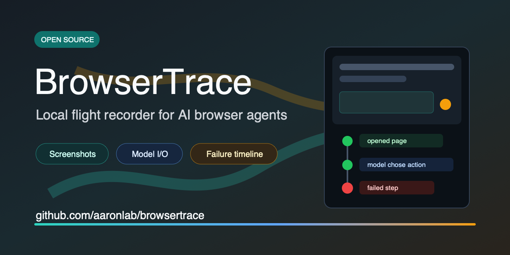

One sentence
BrowserTrace helps Browser Use, Stagehand, Playwright + LLM, Skyvern, and computer-use builders debug failed browser-agent runs with local step timelines.
Product copy, demo links, media assets, and safe sharing notes for BrowserTrace, an open-source local debugger for AI browser-agent failures.

Before PyPI publishing is enabled, use the GitHub release tag to run the no-API demo.
uvx --from "browsertrace[ui] @ git+https://github.com/aaronlab/browsertrace@v0.1.14" browsertrace doctor
uvx --from "browsertrace[ui] @ git+https://github.com/aaronlab/browsertrace@v0.1.14" browsertrace demo
uvx --from "browsertrace[ui] @ git+https://github.com/aaronlab/browsertrace@v0.1.14" browsertraceBrowserTrace helps Browser Use, Stagehand, Playwright + LLM, Skyvern, and computer-use builders debug failed browser-agent runs with local step timelines.
BrowserTrace is a local flight recorder for AI browser agents. It records each step with screenshots, URL, action, model input/output, status, and error so you can jump straight to the first failed browser state.
What browser state do you wish your current agent logs captured at failure time?
BrowserTrace records each AI browser-agent step locally: screenshot, URL, action, model input/output, status, and error. Open a timeline, jump to the failed step, and export a shareable HTML trace.
{kind=link}
{kind=link}